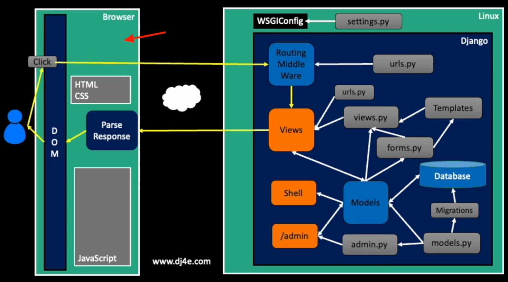

Overview
Happy New Year! We're getting a bit of a late start thanks to the Winter storm, but we're back now and ready to move forward in our study of web application development with Django.
But before we do that, please visit https://nova.mce.cc and use your VCCS email address as you login and your 7-digit NOVA ID as your password to complete your course evaluation. NOVA really wants student participation here, and your willingness to complete this task reflects well on your instructors, so thank you in advance for doing it.
Wednesday, January 15th
Classwork
We will begin class today with the promised quiz based on the study questions from your last homework. There are 14 possible points, and your grade will be derived by taking your total points divided by 12 and then mapping that to a letter grade using the standard A: score >= 90, B: 90 > score >= 80 etc.).
After the quiz we will install and configure the dj4e_samples repo that we will use to learn Django.
Do each of the following:
- Clone the dj4e_samples repo into a suitable place on your development machine.
-
Add
.venvto your.gitignorein preperation for setting up a virtual environment. A good.gitignorefor our purposes here should include at least the following:*.swp __pycache__ *.sqlite3 *.db .DS_Store *.pyc .venv
-
Create your virtual environment inside your project directory by running:
% python3 -m venv .venv
-
Activate it with:
% source .venv/bin/activate
-
Now install all the Django modules we will need with:
(.venv) % pip3 install -r requirements.txt
-
Finally, launch the Django webserver with:
(.venv) % python manage.py runserver 0.0.0.0:8000
and point your browser at it.
At this point you should see a message in your terminal containing:
You have 61 unapplied migration(s). Your project may not work properly until you apply the migrations for app(s): admin, auth, autos, bookmany, bookone, cats, chat, contenttypes, favs, favsql, form, forums, gview, many, myarts, pics, rest, sessions, social_django, taggit, tagme, tracks, users, well. Run 'python manage.py migrate' to apply them.After you last homework, you should know what this is about!
With the time remaining in our short class today, we will begin looking at what this application offers us and discuss what we will do with our homework time.
Homework
TBD
Monday, January 13th
Classwork
6 of the 9 of you have completed your NVCC course evaluation. The 3 of you who have yet to do this should do it now at the beginning of class.
Today we will begin looking at the big picture
of the Django
web appliation framework:

using Dr. Chuck's mini_django.
Tasks
-
Find a nice location to clone
mini_django, and run:% git clone https://github.com/csev/mini_django/
-
Start the server with:
% python runserver.py
-
Point your browser at your server address on port
9000. - Explore the different urls suggested, watching what happens with your web developer tools.
-
You're also going to want a copy of the
dj4e_examplesrepo that Dr. Chuck references in the homework videos. Again, you can grab our slightly tweaked version by running:% git clone https://git.gctaa.net/ACCICT/gctaa_dj4e_samples.git
Homework
Watch the Django Data Models video from Lesson 8: Django Data Models, taking notes in a markdown file in your git repo.
You will have a quiz at the beginning of class on Wednesday. You can use one 8 1/2 by 11 inch sheet of paper, front and back, for notes that you can use during the quiz.
As you watch the videos, prepare to answer the following questions ( answers to these would be the best thing to put in your notes - hint, hint! ):
- Dr. Chuck makes a statement about the
learning curve
for SQL. What exactly does he say? - In your own words, how would you define Object-relational mapping (ORM)? How will we use it in Django and what specifically will it do?
- What does Dr. Chuck say are the advantages of the ORM? What disadvantages (if any) does it have?
- Dr. Chucks that most (he mentions a percentage) of the things you want to do with SQL can be done effectively with an ORM. What exactly does he say?
- What is the name of the file in which the ORM data objects are defined?
- In the example of an ORM object:
class User(models.Model): name = models.CharField(max_length=128) email = models.CharField(max_length=128)Dr. Chuck draws a line tomodels.Modeland mentions what that is. What does he say? Of which OOP feature is this an example? - What two commands do you need to run to go from an ORM to deployment in a database?
- What does running
python3 manage.py shelldo? Be specific! - In the example session Dr. Chuck talks about, he creates a new user named
Kristen with email address kf@umich.edu. Where is this user created when:
u = User(name='Kristen', email='kf@umich.edu')
is run? What command needs to be used to add this new user to the database?